168 — U tủy thượng thận & u cận hạch (pheochromocytoma & paraganglioma — PPGL)
Tags: pattern:khoi-thuong-than pattern:paraganglioma vung:thuong-than vung:paraganglia protocol:MIBG-DOTATATE incidentaloma:u-thuong-than
Mức chắc chắn (certainty): tổng hợp y văn (literature synthesis) — nhóm tự biên từ y văn mở (Cureus 2026, J Clin Med 2026, Front Endocrinol 2026, Quant Imaging Med Surg 2023, Front Surg 2026, Endocr Connect 2025), số liệu lấy nguyên từ bài gốc.
Câu chốt: "Pheochromocytoma là tắc kè hoa của hình ảnh (imaging chameleon)". Mọi khối thượng thận hoặc cạnh động mạch chủ ngấm mạnh — kể cả khi có thải thuốc "kiểu adenoma", kể cả khi MIBG và metanephrine bình thường — vẫn phải loại pheo trước khi sinh thiết/mổ, vì chọc vào u tủy thượng thận chưa chuẩn bị alpha-block có thể gây cơn tăng huyết áp chết người.
1. Tổng quan — vì sao khối u này ngấm mạnh, "sáng trên T2" và bị bỏ sót
- Bệnh học (pathology): pheo và paraganglioma (PGL) cùng xuất phát từ tế bào ưa crôm (chromaffin cells) — pheo ở tủy thượng thận, PGL ở hạch cận giao cảm ngoài thượng thận (Zuckerkandl, chuỗi paravertebral, bàng quang) hoặc đối giao cảm đầu–cổ (thân cảnh, đám rối tĩnh mạch, thần kinh lang thang, màng nhĩ). Cùng mô học → khác vị trí là khác tên gọi; chỉ tế bào lan tới ổ không ưa crôm (di căn) mới gọi là ác tính (WHO 2022) — không có tiêu chuẩn vi thể nào tự đủ để gọi "ác".
- TẠI SAO ngấm mạnh trên CT/MRI: u giàu mạng mao mạch + xoang máu giữa các ổ tế bào → cản quang vào sớm ở thì động mạch rồi ngấm bền; hoại tử/đôi khi ung thư hóa (cystic/necrotic) làm ngấm không đồng nhất. Đậm độ sau tiêm trung bình ~109,93 ± 38,28 HU (ca 47 u xác nhận mô bệnh) — gần như luôn > 10 HU, rất khác adenoma giàu mỡ.
- TẠI SAO "sáng" trên T2 ("dấu bóng đèn" / light-bulb): tế bào ưa crôm giàu nước trong bào tương → tín hiệu T2 rất cao; trên chuỗi T1 in-phase/out-of-phase KHÔNG tụt tín hiệu (không có mỡ vi thể — khác adenoma). Ngoài ra hoại tử và tăng sinh mạch làm u không đồng nhất.
- TẠI SAO MIBG bắt xạ: ¹²³I-MIBG vào tế bào qua chất vận chuyển noradrenaline (NET) → cần u còn biệt hóa/tổng hợp catecholamine; u im lặng sinh hóa, kém biệt hóa có thể MIBG ÂM.
- TẠI SAO ⁶⁸Ga-DOTATATE và ¹⁸F-FDG bổ trợ nhau: DOTATATE gắn thụ thể somatostatin (SSTR) (còn nhiều ở u biệt hóa, dùng cho PRRT); FDG phản ánh chuyển hóa glucose/giảm biệt hóa — tăng ở SDHB đột biến, di căn, hung hãn.
Ngưỡng định lượng bắt buộc (mục 1 & 4):
- CT: u > 10 HU khi không tiêm; ngấm mạnh khi động mạch (thường > 100 HU); thải thuốc có thể đạt "chuẩn adenoma" (APW ≥ 60% / RPW ≥ 40%) → KHÔNG loại trừ pheo (bài 155 có ca pheo ác thải 89%; ca MEN 2A dưới đây thải APW 50% và 58%).
- MRI — 4 dấu hiệu chìa khóa (tần suất trong 47 ca xác nhận mô bệnh): T2 rất sáng 97,7% · không đồng nhất nội tại 93,2% · ngấm sớm 95,4% · không tụt tín hiệu trên T2 fat-sat 94,5%. T2 sáng rất nhạy nhưng KHÔNG đặc hiệu (u khác cũng sáng).
- Sinh hóa: plasma free metanephrine/normetanephrine; tăng metanephrine niệu/huyết 57–77% trong ca bệnh; 5–15% bệnh nhân KHÔNG tăng huyết áp ("im lặng lâm sàng"). Quy tắc "10%" (10% ngoài thượng thận, 10% gia đình, 10% hai bên...) đã lỗi thời — nay ~40% PPGL mang đột biến dòng mầm, SDHx chiếm ~15%.
- Dịch tễ: tần suất tăng từ ~0,2 (trước 2000) lên ~0,6/100.000/người/năm (sau 2010); pheo 75–95% lành, PGL nguy cơ ác cao hơn (tới ~50% tùy vị trí/gene); tái phát sau cắt ~10%.
- Phân tử: PASS > 4 (Pheochromocytoma of the Adrenal Gland Scaled Score, 12 đặc điểm vi thể) hoặc GAPP (Grading System for Adrenal Pheo/PGL) phân độ thấp/trung bình/cao; nhưng chỉ di căn mới xác định "ác". Ca GAPP 4 (trung bình) + Ki-67 1–3%.
2. Mẫu hình + chẩn đoán phân biệt theo vị trí & sinh hóa (Gamut)
- Mẫu hình A — khối THƯỢNG THẬN ngấm mạnh (+ "sáng" T2): pheo (ưu thế noradrenaline + adrenaline); phân biệt di căn (kém ngấm hơn, tiền sử K), ung thư vỏ thượng thận (ACC) (to > 4–6 cm, bờ không đều, xâm lấn), adenoma nghèo mỡ (thải đạt — nhưng xem cạm bẫy!), u mỡ cơ mạch (myelolipoma) (mỡ < −30 HU).
- Mẫu hình B — khối CẠNH ĐỘNG MẠCH CHỦ / cạnh sống ngấm mạnh: PGL giao cảm (cơ quan Zuckerkandl, chuỗi giao cảm ngực–bụng). Thường chỉ tiết noradrenaline/dopamine → normetanephrine ± 3-methoxytyramine.
- Mẫu hình C — khối trong THÀNH BÀNG QUANG: PGL bàng quang — cơn tăng huyết áp khi đi tiểu (micturition attack), tiểu máu; 83% có chức năng; đặc điểm "phẳng" hơn pheo (thường không có dấu bóng đèn T2), nằm dưới niêm mạc → thấy "đường niêm mạc bàng quang" bao quanh, chân rộng.
- Mẫu hình D — khối ĐẦU–CỔ (khoang cảnh) ngấm mạnh ở chạc ba động mạch cảnh: PGL thân cảnh/đối giao cảm — dấu "tách/giãn chạc cảnh" (splaying of the carotid bifurcation) trên CTA/MRI, blush mạnh trên DSA; thường không tiết catecholamine. Gợi nhớ vị trí theo Shamblin I–III (mức dính/nuốt động mạch cảnh) để lập kế hoạch mổ.
- Gợi nhớ theo "chữ P" (Pheo/PGL): Paroxysmal HTN · Palpitations · Perspiration · Pallor/headache; Post-micturition (PGL bàng quang); Paternal inheritance (SDHD/SDHAF2 — di truyền theo cha).
3. Bảng so sánh phân biệt (ma trận đối chiếu)
| Thực thể (entity) | Hình ảnh điển hình | Chốt vào (rule-in) | Chốt loại (rule-out) | Gợi ý xác nhận |
|---|---|---|---|---|
| Pheo thượng thận | Khối thượng thận ngấm mạnh thì ĐM, không đồng nhất (hoại tử/nang); T2 rất sáng, không tụt tín hiệu trên T2 fat-sat | Khối thượng thận > 10 HU + T2 "bóng đèn" + metanephrine tăng | ≤ 10 HU không tiêm + tụt tín hiệu in/out-of-phase = adenoma giàu mỡ | Plasma free metanephrines; ¹²³I-MIBG / ⁶⁸Ga-DOTATATE / ¹⁸F-FDG |
| PGL giao cảm ngoài thượng thận | Khối cạnh ĐMC/cạnh sống ngấm mạnh, hình tròn–bầu dục | Khối cạnh ĐMC ngấm mạnh + normetanephrine/3-methoxytyramine tăng | Nốt mỡ đại thể (−10 đến −100 HU) → nghĩ u mỡ cơ mạch/hạch mỡ | CT/MRI bụng–chậu; DOTATATE PET/CT (đa ổ) |
| PGL bàng quang | Khối dưới niêm mạc, chân rộng, ngấm mạnh; "đường niêm mạc" bao quanh; thường không có T2 bóng đèn | Cơn THA khi đi tiểu + khối thành bàng quang ngấm mạnh | Ngấm tiến triển + bờ rau cải + ít mạch = ung thư biểu mô bàng quang | Siêu âm Doppler (RI thấp ~0,60) + MRI; metanephrine; cấm TURBT trước alpha-block |
| PGL đầu–cổ (thân cảnh…) | Tách/giãn chạc ba cảnh, ngấm mạnh, flow void; blush trên DSA | Khối ở chạc cảnh + tách ĐM cảnh trong/ngoài | Khối đẩy lệch nhưng không tách chạc = schwannoma/hạch khác | CTA/MRI ± DSA; DOTATATE PET/CT; Shamblin I–III |
| Di căn thượng thận | Khối ngấm mạnh không đồng nhất, thường hai bên, khối ngoài thượng thận cùng lúc | Tiền sử K + hai bên + tổn thương ngoài thượng thận | T2 bóng đèn + metanephrine tăng rõ = pheo | PET/CT, chọc hút chỉ khi đã loại pheo |
| Adenoma nghèo mỡ | Ngấm sớm rồi thải nhanh; tụt tín hiệu chemical-shift | APW ≥ 60% / RPW ≥ 40% + tụt tín hiệu in/out-of-phase | Có T2 bóng đèn + không tụt tín hiệu + lâm sàng cơn → KHÔNG loại pheo dù thải đạt | Washout 15 phút; metanephrine trước khi tin "adenoma" |
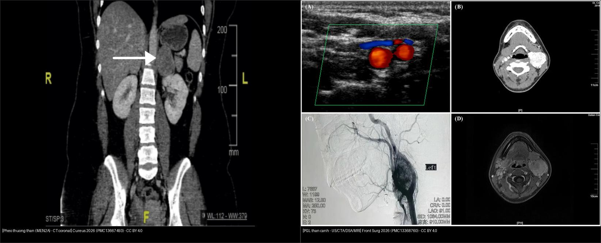
Trái: pheo thượng thận (MEN 2A) — khối ngấm mạnh cạnh thận trên CT coronal. Phải: PGL thân cảnh — khối ngấm mạnh ở chạc ba cảnh với tách động mạch cảnh trong/ngoài (US/CTA/DSA/MRI). Chốt: cùng mô học ưa crôm, khác vị trí → khác tên gọi và khác cách tiếp cận (thượng thận = alpha-block trước mổ; đầu–cổ = Shamblin/vessel-preserving). Nguồn: Albugami S et al., Cureus 2026 (PMC13667493) + Zhou W et al., Front Surg 2026 (PMC13368760), CC BY 4.0. Ảnh ghép letterbox.4. Protocol chụp + phác đồ chức năng + sơ đồ ra quyết định
- Sinh hóa TRƯỚC hình ảnh: plasma free metanephrines (hoặc metanephrine niệu 24 giờ); thêm 3-methoxytyramine khi nghi PGL (dopamine). Không sinh thiết, không can thiệp trước khi loại pheo.
- CT: bụng–chậu có + không cản quang (đo HU, washout 15 phút) khi cần phân biệt adenoma. Lưu ý an toàn: cản quang không gây khủng hoảng ở đa số ca (31/47 ca chụp cản quang không chuẩn bị alpha-block, không biến cố) — nhưng vẫn khuyến cáo alpha-block trước mọi thủ thuật nghi pheo.
- MRI (ưu tiên ở người trẻ, thai, cần theo dõi lặp, dị ứng cản quang): T1 in/out-of-phase + T2 (fat-sat) + T1 fat-sat sau tiêm + DWI/ADC; chú ý 4 dấu hiệu ở mục 1.
- Hình ảnh chức năng — chọn "bộ ba" theo mục tiêu:
| Modality (bài này) | Cơ chế | Ưu điểm (số liệu n=38 ca ba phương thức) | Vai trò chính |
|---|---|---|---|
| ¹⁸F-FDG PET/CT–MRI | Chuyển hóa glucose | Phát hiện chung 94,7%; di căn 16/16 = 100%; 100% ở SDHB/VHL | Đánh giá toàn thân + độ hung hãn ("FDG-first") |
| ⁶⁸Ga-DOTATATE PET/CT | Thụ thể SSTR | Phát hiện chung 92,1%; di căn 92,3%; ưu việt cho đầu–cổ | Chọn PRRT (¹⁷⁷Lu-DOTATATE); đa ổ |
| ¹²³I-MIBG SPECT/CT | Chất vận chuyển noradrenaline | Phát hiện chung 89,5%; di căn chỉ 84,6% (di căn pheo 3/7 = 42,9%) | Chọn bệnh nhân cho ¹³¹I-MIBG therapy |
- Ngưỡng SUV gợi ý: PPGL khó khi FDG SUVmax < 2,1 và DOTATATE < 4,3**; **nhiều khả năng** khi **> 10,8 và > 24,5.
- Sinh học: FDG SUVmax tương quan với 3-methoxytyramine (r = 0,56; p = 0,0034) — dấu ấn của u tiết dopamine/ngoài thượng thận/di căn.
- Sàng lọc người mang đột biến SDHx (không triệu chứng): bắt đầu SDHB từ 6 tuổi, các gen khác (SDHD/SDHC/SDHA/SDHAF2) từ 10 tuổi; ca SDHC trẻ nhất được báo cáo 8 tuổi. SDHD & SDHAF2 di truyền theo cha (in dấu nguồn gốc — paternal).
- Ngưỡng gen: germline
40% PPGL; SDHB → nguy cơ di căn cao nhất (51,7%); các SDHx khác **29,4%**; SDHAF2 penetrance 87,5%. - MEN 2A (RET): MTC ~100%, pheo ~50%, cường cận giáp 10–20%; RET dương 98%; phải cắt thượng thận TRƯỚC tuyến giáp/cận giáp để tránh khủng hoảng THA khi mổ.
flowchart TD
A[Khoi u THUONG THAN / canh DMC ngam manh nghi PPGL] --> B{Metanephrine huyet - nuoc tieu tang?}
B -->|Khong ro / am tinh| C[Van nghi: u im lang sinh hoa 26%]
B -->|Co| D[Xac nhan u tiet catecholamine]
A --> E{Co co che tang huyet ap con / met moi / hoa / dap?}
E -->|Co| D
C --> F[Loai pheo TRUOC moi thu thuat: alpha-block]
D --> F
F --> G[Anh hoa chuc nang: FDG PET la dong dau tien]
G --> H{Co di can / nghi SDHB?}
H -->|Co| I[DOTATATE PET de chon PRRT; MIBG neu huong 131I-MIBG]
H -->|Khong| J[Danh gia tai cho + phau thuat sau alpha-block]
I --> K[Da mo thuc: phau thuat +/- PRRT / 131I-MIBG]
J --> K
5. Biến thể bình thường và cạm bẫy
- "Thải thuốc đạt chuẩn adenoma" không loại trừ pheo: pheo (và di căn RCC/HCC giàu mạch) có thể thải APW ≥ 60% → luôn đối chiếu T2 bóng đèn + không tụt tín hiệu chemical-shift + metanephrine (nối bài 155).
- MIBG âm KHÔNG loại trừ: 3/47 ca im lặng sinh hóa + MIBG âm, chỉ chẩn đoán nhờ mô bệnh sau mổ (u nhỏ, kém biệt hóa). Có T2 bóng đèn vẫn phải chuyển sang DOTATATE/FDG.
- T2 bóng đèn không đặc hiệu: một số di căn và u khác cũng sáng T2 → cần kết hợp bối cảnh + sinh hóa.
- Xuất huyết thượng thận che lấp u: máu tụ lớn làm mờ u → chụp lại sau khi máu tụ tiêu để lộ khối ngấm mạnh (ca đau hông lưng cấp, thiếu máu, huyết áp bình thường vẫn có thể là pheo xuất huyết).
- Bẫy bàng quang: PGL bàng quang không có dấu bóng đèn T2 điển hình; dễ bị đọc nhầm ung thư biểu mô bàng quang → ngấm mạnh + đường niêm mạc bảo tồn + cơn THA khi tiểu là chốt. TURBT trước alpha-block có thể gây khủng hoảng THA.
- Bẫy giải phẫu (mặt cắt): khối ngấm mạnh cạnh ĐMC dễ bị gọi "hạch to" hoặc "u mỡ cơ mạch" — nếu không có mỡ (−10 đến −100 HU) và ngấm mạnh thì ĐM → nghĩ PGL.
- Lành/hóa trị "sớm": u PGL giao cảm có thể tiến triển ung thư hóa (dedifferentiation) theo thời gian, biểu hiện bằng mất ngấm DOTATATE + tăng FDG → cần theo dõi.
- Sai lầm nguy hiểm: sinh thiết/đốt u thượng thận > 10 HU chưa loại pheo.
6. Tự lượng giá — Blind Quiz
Ca 1 — Nữ 23 tuổi, đau đầu từng cơn + hồi hộp + vã mồ hôi 2 tháng, THA 178/97 mmHg; CT bụng cản quang (coronal). Đọc khối thượng thận trước khi xem đáp án.
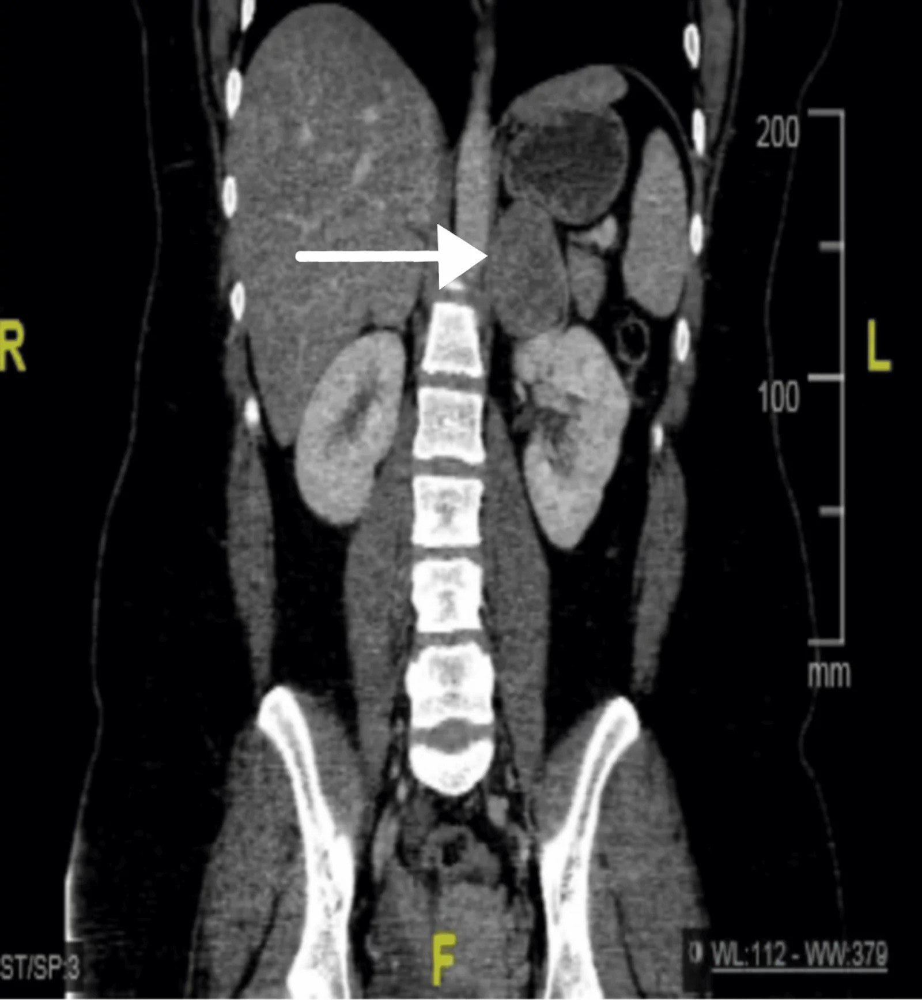
- Gợi ý lâm sàng: trẻ, THA kịch phát, có hạch giáp/thuốc.
- Câu hỏi: mô tả khối thượng thận hai bên? Vì sao phải kiểm tra tuyến giáp? Chẩn đoán hội chứng?
Bấm để hiện đáp án (findings + chẩn đoán)
- Dấu hiệu (findings): khối thượng thận HAI BÊN ngấm mạnh không đồng nhất (P: 4,2 × 3,6 cm; T: 5 × 3,8 cm), có hoại tử; CT còn thấy khối/tuyến giáp cần đánh giá.
- Chẩn đoán: pheochromocytoma hai bên trong MEN 2A (kèm ung thư giáp thể tủy — MTC và cường cận giáp có thể). Phân biệt: di căn hai bên, ACC, adenoma. Chốt: u thượng thận hai bên ở người trẻ + MTC + RET dương = MEN 2A.
- Xử trí: alpha-block (phenoxybenzamine) trước mổ; cắt thượng thận trước tuyến giáp; tầm soát gen RET cho gia đình. Tái phát sau cắt ~10% → theo dõi ≥ 10 năm. Ca này có thải thuốc APW 50–58% (gần "chuẩn adenoma") — minh họa cạm bẫy.
- Nguồn: Albugami S et al., Cureus 2026, Fig. 1, PMC13667493, CC BY 4.0.
Ca 2 — Cùng bệnh nhân, theo dõi sau mổ: PET/CT phát hiện tổn thương tái phát. Bạn nhìn thấy gì?
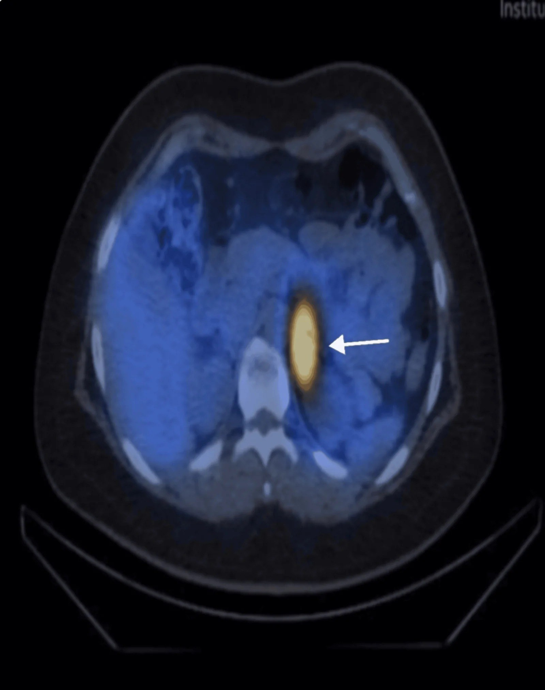
Bấm để hiện đáp án (findings + chẩn đoán)
- Dấu hiệu: nhiều nốt ngấm FDG mạnh ở giường thượng thận trái (khớp với MIBG trước đó) = pheo tái phát/tồn dư; khối dính tĩnh mạch thận khi mổ.
- Chẩn đoán: pheo tái phát (PASS 4 → xếp "ác tính"), được xử trí cắt khối + xạ ¹³¹I-MIBG bổ trợ. Chốt: PET/CT bắt đúng di căn xương (ĐM sống T1, T7, sườn 8, khung chậu) khi hình cắt lớp bỏ sót.
- Nguồn: Albugami S et al., Cureus 2026, Fig. 4, PMC13667493, CC BY 4.0.
Ca 3 — Đau hông lưng phải cấp + thiếu máu (Hb 93 g/L), huyết áp BÌNH THƯỜNG. CT ban đầu có máu tụ lớn quanh thận. Nhìn hai lần chụp (ban đầu → theo dõi), có gì thay đổi?
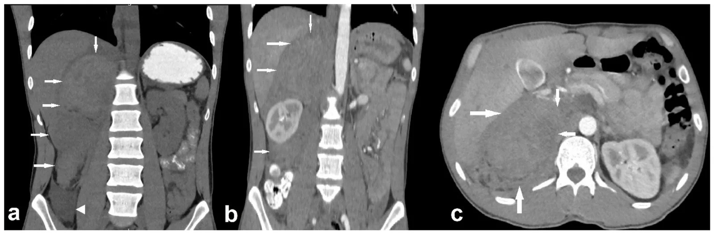
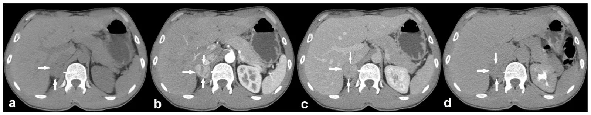
- Gợi ý: ban đầu đọc là "máu tụ sau phúc mạc"; MRI tiếp theo vẫn gợi "máu tụ bán cấp".
- Câu hỏi: vì sao phải chụp lại? Khối còn lại sau khi máu tụ tan gợi ý gì? Xét nghiệm nào xác nhận?
Bấm để hiện đáp án (findings + chẩn đoán)
- Dấu hiệu: ban đầu máu tụ lớn ngấm hỗn hợp ở khoang sau phúc mạc phải (che lấp u); theo dõi thấy khối giảm kích thước nhưng còn nhân ngấm mạnh thì động mạch. MRI còn gợi "máu tụ bán cấp", ¹²³I-MIBG sau đó DƯƠNG ở thượng thận phải.
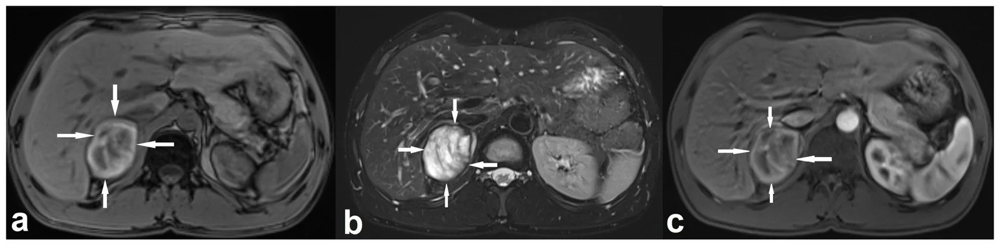
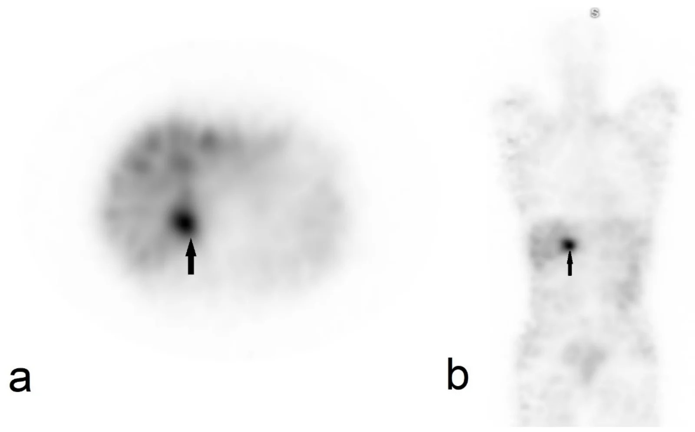
- Chẩn đoán: pheo xuất huyết tự phát ở bệnh nhân KHÔNG tăng huyết áp — metanephrine tăng dần (normetanephrine 1,91 → 3,83 nmol/L) + MIBG dương xác nhận; mổ sau alpha-block (doxazosin), mô bệnh pheo GAPP 4, Ki-67 1–3%.
- Chốt: máu tụ thượng thận "đơn thuần" phải theo dõi hình ảnh tới khi hết; khối còn lại ngấm mạnh = u nền; pheo có thể không THA (5–15%).
- Nguồn: Ramanauskas J et al., J Clin Med 2026, Fig. 1, 2, 4 & 5, PMC13607346, CC BY 4.0.
Ca 4 — (A–C) bệnh nhân pheo lành thượng thận trái; (D–F) bệnh nhân PGL bụng. So sánh ba phương thức chức năng.
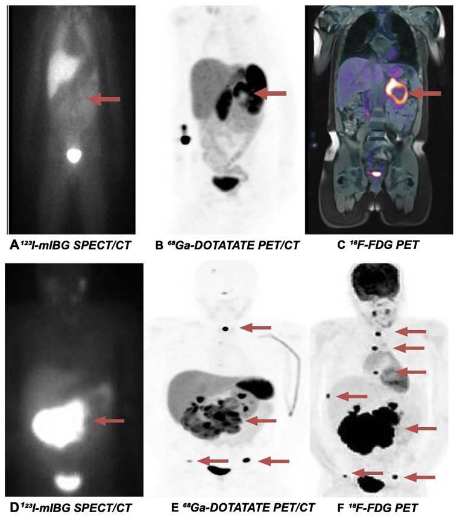
- Câu hỏi: ở hàng trên (A–C), phương thức nào dương/âm? Ở hàng dưới (D–F), phương thức nào bắt được di căn xương nhiều nhất?
Bấm để hiện đáp án (findings + chẩn đoán)
- Hàng trên (pheo lành): (A) ¹²³I-MIBG ÂM dù u ngấm mạnh trên (B) DOTATATE và (C) FDG (có photopenia trung tâm do hoại tử).
- Hàng dưới (PGL bụng): (D) MIBG chỉ thấy tổn thương nguyên phát; (E) DOTATATE thấy di căn xương (sọ, cột sống, khung chậu); (F) FDG thấy gánh nặng di căn nhiều nhất (mỏm gai T1 SUVmax 17,7; T7 9,1; sườn 8, khung chậu hai bên).
- Chốt: FDG phát hiện chung 94,7% > DOTATATE 92,1% > MIBG 89,5%; FDG thắng rõ ở di căn (100% vs 92,3% vs 84,6%). MIBG vẫn cần để chọn ¹³¹I-MIBG therapy.
- Nguồn: Alhazzaa N et al., Front Endocrinol 2026, Fig. 2, PMC13433214, CC BY 4.0.
Ca 5 — Nữ 40 tuổi, tiểu máu + tăng huyết áp khi đi tiểu; MRI khung chậu.
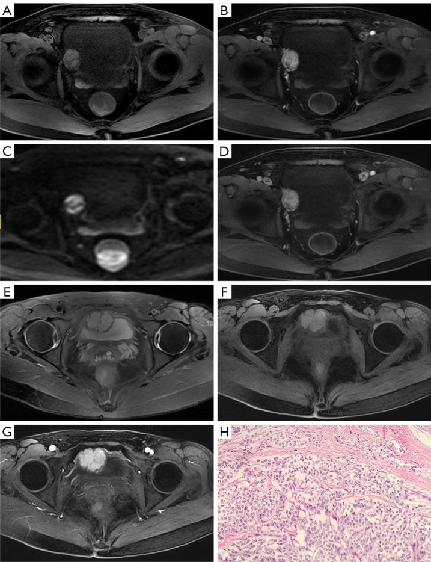
- Câu hỏi: khối ở lớp nào của thành bàng quang? Vì sao "đường niêm mạc" quanh khối là chốt? Chẩn đoán và xử trí bắt buộc trước mổ?
Bấm để hiện đáp án (findings + chẩn đoán)
- Dấu hiệu: khối dưới niêm mạc (submucosal), chân rộng trong thành bàng quang, "đường niêm mạc bàng quang" bảo tồn bao quanh, ngấm mạnh, DWI hạn chế; Doppler RI thấp 0,60 (giàu mạch).
- Chẩn đoán: paraganglioma bàng quang (83% có chức năng). Chốt vào: cơn THA khi tiểu + khối dưới niêm mạc ngấm mạnh. Chốt loại: ung thư biểu mô bàng quang thường ngấm tiến triển, bờ rau cải, ít mạch.
- Xử trí: alpha-block trước mọi can thiệp — TURBT chưa chuẩn bị có thể gây khủng hoảng THA tới 230/150 mmHg; đây là lý do phải nghĩ PGL trước khi nội soi cắt.
- Nguồn: Yu W et al., Quant Imaging Med Surg 2023, Fig. 3, PMC10006104, CC BY-NC-ND 4.0 (giữ nguyên bản).
Ca 6 — Nữ 20 tuổi, khối cổ bên trái không đau; đa phương thức hình ảnh.
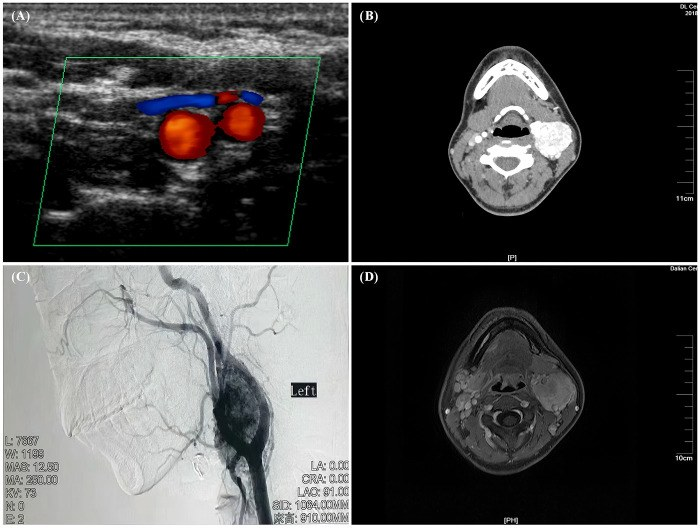
- Câu hỏi: dấu hiệu nào định vị khối ở chạc ba cảnh thay vì thần kinh khác? Shamblin đóng vai trò gì?
Bấm để hiện đáp án (findings + chẩn đoán)
- Dấu hiệu: khối ngấm mạnh tập trung ở chạc ba động mạch cảnh, tách (splay) động mạch cảnh trong và ngoài, blush mạnh trên DSA, flow void trong MRI → PGL thân cảnh.
- Chẩn đoán: carotid body paraganglioma (PGL đối giao cảm đầu–cổ, thường không tiết catecholamine). Shamblin I–III mô tả mức độ dính/nuốt mạch cảnh để dự liệu mổ (ca này ước Shamblin II, bảo tồn mạch).
- Chốt: khối khoang cảnh tách chạc cảnh + ngấm mạnh + flow void = PGL thân cảnh; người trẻ → nên tầm soát gen SDHx (bài này không có kết quả gen — điểm hạn chế của ca).
- Nguồn: Zhou W et al., Front Surg 2026, Fig. 1, PMC13368760, CC BY 4.0.
Ca 7 — Bệnh nhân trẻ, đa u: ⁶⁸Ga-DOTATATE PET/CT (hàng trên) và MRI (hàng dưới). Tổn thương ở đâu, gợi ý gen/hội chứng nào?
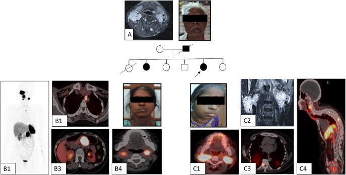
Bấm để hiện đáp án (findings + chẩn đoán)
- Dấu hiệu: PGL đầu–cổ hai bên (HNPGL), PGL trung thất và cạnh ĐMC, kèm di căn xương sống trên ⁶⁸Ga-DOTATATE PET/CT; bố và hai con cùng đột biến.
- Chẩn đoán: hội chứng PGL di truyền gen SDHAF2 (di truyền theo cha, penetrance 87,5%, thường HNPGL; hiếm khi di căn — ca chỉ điểm này có di căn xương).
- Chốt: ⁶⁸Ga-DOTATATE PET/CT nhạy nhất cho tổn thương nguyên phát và di căn SDHx (di căn 98% vs CECT 72% / FDG 67,8% / MIBG 70,2%); hàng loạt HNPGL hai bên ở người trẻ = nghĩ SDHx, tầm soát gia đình.
- Nguồn: Ambulkar KS et al., Endocr Connect 2025, Fig. 1, PMC12508308, CC BY-NC 4.0 (giữ nguyên bản).
Ca 8 — Bệnh nhân pheo, MIBG ÂM, sinh hóa chỉ tăng nhẹ/bình thường. Nhìn T2 và MIBG, bạn kết luận thế nào?
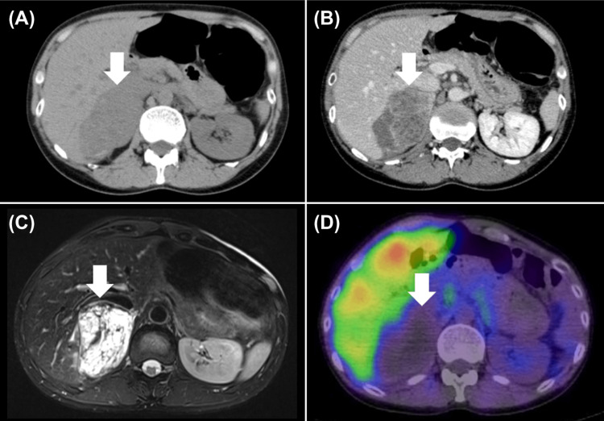
Bấm để hiện đáp án (findings + chẩn đoán)
- Dấu hiệu: (A) không tiêm, (B) cản quang ngấm nhẹ, (C) T2 rất sáng, (D) ¹²³I-MIBG ÂM. Một trong 3 ca im lặng sinh hóa + MIBG âm chỉ chẩn đoán nhờ mô bệnh sau mổ.
- Chẩn đoán: pheochromocytoma — dù MIBG âm. Chốt: MIBG dương chỉ 85,1% (40/47), u nhỏ/kém biệt hóa dễ âm; T2 bóng đèn + không tụt tín hiệu fat-sat hỗ trợ.
- Nguồn/bài học: MRI (đặc biệt T2) hữu ích khi sinh hóa và xạ hình không kết luận; alpha-block vẫn phải chuẩn bị trước mổ.
- Nguồn: Sekido T et al., Cureus 2026, Fig. 2, PMC13250717, CC BY 4.0.
Ca 9 — Thuật toán: bệnh nhân nghi PPGL, nên chọn hình ảnh chức năng nào trước? Chỉ nhìn sơ đồ.
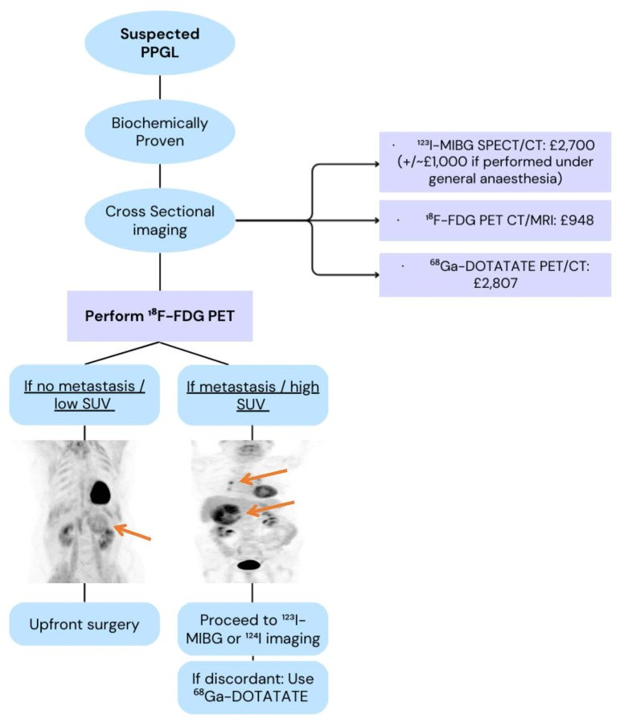
Bấm để hiện đáp án (findings + chẩn đoán)
- Đáp án: ¹⁸F-FDG PET/CT–MRI là bước chức năng đầu tay (phát hiện cao nhất 94,7%, có sẵn, rẻ hơn); nếu di căn/SUV cao/SDHB → bổ sung ⁶⁸Ga-DOTATATE (chọn PRRT) hoặc ¹²³I-MIBG (chọn ¹³¹I-MIBG therapy).
- Chốt: FDG để chẩn đoán/phân giai đoạn; MIBG & DOTATATE để chọn điều trị phóng xạ (theranostic).
- Nguồn: Alhazzaa N et al., Front Endocrinol 2026, Fig. 3, PMC13433214, CC BY 4.0.
Bài liên quan chéo
- 100 – Tổng quan hệ Bụng (bảng DDx bắt buộc)
- 155 – Khối thượng thận tình cờ & Washout (bẫy pheo thải thuốc "kiểu adenoma")
- 156 – Hội chứng di truyền u thận: VHL/BHD/HLRCC/TSC/SDH (VHL/SDH → pheo/PGL; lịch tầm soát)
- 159 – Bàng quang: VI-RADS & UTUC (phân biệt PGL bàng quang vs u biểu mô)
- 167 – Biến chứng tim mạch của pheo: bệnh cơ tim do catecholamine, takotsubo & khủng hoảng THA
- 177 – Điều trị & theo dõi PPGL: alpha-block, phẫu thuật, PRRT/MIBG
- 169 – PPGL ở trẻ em & thai kỳ
Ảnh
- Tên file:
168_slug_Modality_SourceID.jpg. Nguồn + giấy phép từng ảnh trongimages/CREDITS.md. - Ảnh CC BY 4.0 (PMC13250717, PMC13607346, PMC13433214, PMC13368760, PMC13667493) có thể ghép letterbox.
- Ảnh CC BY-NC-ND (PMC10006104) và CC BY-NC (PMC12508308) giữ nguyên bản, không crop/ghép.
- AuntMinnie / Radiopaedia: chỉ dẫn link, chỉ tải từng case khi giấy phép cho phép.
Không dùng để chẩn đoán độc lập khi chưa có người hướng dẫn.